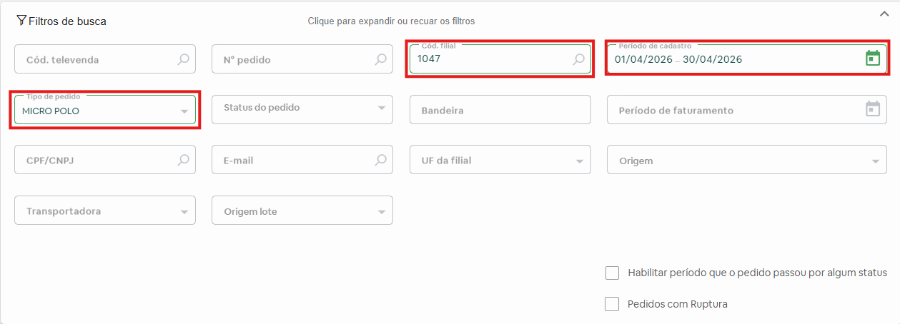
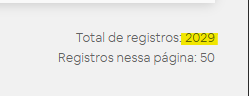
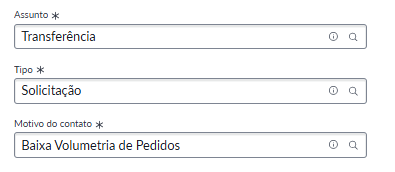

Baixa volumetria de pedidos
A tabulação “Baixa volumetria de pedidos” deve ser aplicada quando a filial apresentar uma redução relevante na quantidade de pedidos capturados, de forma contínua ao longo de semanas consecutivas.
análises necessárias:
🔹Verificar se a filial teve seus serviços fechados
🔹Analisar a quantidade de pedidos captados dos últimos 3 meses
🔹Registrar as análises na interação
Como verificar a volumetria mensal da filial
1º Passo : Filtros
É necessário selecionar os seguintes filtros na parte de "consulta de pedidos" na OMS.

2º Passo
Após clicar em "Buscar", irá aparecer todos os pedidos da filial durante o periodo selecionado, na parte de baixo, do lado direito irá aparecer o total de pedidos.

3º Passo
Registrar na interação a quantidade de pedidos captados pela filial em cada mês do último trimestre
Como abrir a solicitação

Pontos importantes
👉 Como a filial de retirada do pedido fica a critério do cliente, não temos controle sobre a volumetria dos pedidos compre e retire.
👉 Oscilações pontuais no volume de pedidos são esperadas e fazem parte do comportamento natural da operação. Dessa forma, consideramos um cenário potencialmente anômalo apenas quando a redução no volume persiste por vários dias consecutivos.
👉 O time de cadastro verifica a volumetria do último trimestre, por isso é importante analisar e registrar a quantidade de pedido recebidos durante esse peíodo